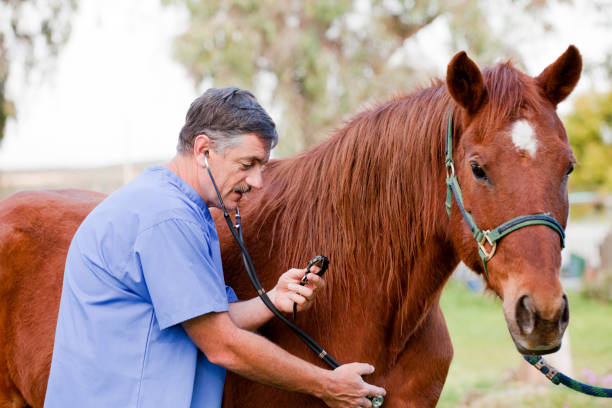

Nuestra Historia
Refugio Patitas Felices nació en el año 2018 cuando un pequeño grupo de vecinos decidió unirse al ver la gran cantidad de perros abandonados en las calles de nuestro barrio. Lo que empezó como un esfuerzo a pulmón en el patio de una casa, hoy se transformó en un refugio consolidado que alberga a más de 80 animales.
A lo largo de estos años, hemos logrado rescatar, rehabilitar y dar en adopción responsable a más de 500 perros, transformando no solo sus vidas, sino también las de las familias que los recibieron.
Nuestros Valores
Respeto Animal
Consideramos que cada perro es un ser sintiente con derecho a una vida digna, libre de maltrato y sufrimiento.
Compromiso
Nos dedicamos las 24 horas, los 365 días del año, al cuidado físico y emocional de nuestros rescatados.
Transparencia
Gestionamos cada donación y recurso de manera clara y abierta, priorizando siempre el bienestar del refugio.
Nuestro Equipo
Laura Giménez
Fundadora y Directora

Dr. Carlos Paz
Veterinario Principal
Martín Sosa
Coordinador de Voluntarios
Sofía Rossi
Responsable de Adopciones
Datos Institucionales
- Razón Social:
- Fundación Patitas Felices Asociación Civil
- Número de Registro:
- IGJ N° 194.832 / AC
- Fecha de Fundación:
- 12 de Abril de 2018
- Dirección del Refugio:
- Av. de los Ombúes 1420, Buenos Aires, Argentina
- Teléfono de Contacto:
- +54 11 4567-8910
- Email Oficial:
- contacto@patitasfelices.org